梅吉の節句 [梅吉]
梅吉さんは端午の節句ってご存知ですか？
男の子が健康に育ってくれるようにお願いする日なんですよ。

そうそうその兜は梅吉さんを病気から守ってくれるんですって。
どうです？ちょっと早いけどかぶってみませんか＾＾
ついでに荒武者ぶりを披露しちゃいましょうよー！！

なんて虚ろな目の荒武者・・・・・

そうそう＾＾
その調子でキリッとした兜姿を披露しましょう！
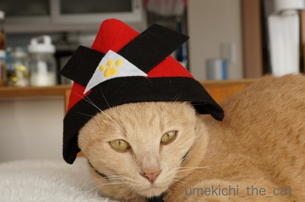
![[猫]](https://blog.ss-blog.jp/_images_e/101.gif) かぶと ずれてきたで
かぶと ずれてきたで
今日はあまり協力的ではないようで(^▽^;)
じゃあ兜を脱ぎましょうか？
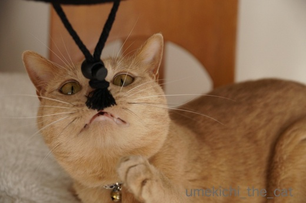
と脱がそうとするとあごヒモに付いていた留め具に反応。
そうそう！その調子で荒武者ぶりを・・・・・
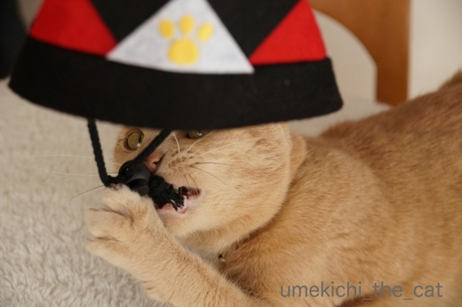
かぶとちゅーのは おもちゃやったんやな！
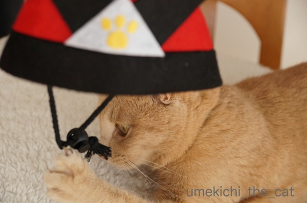
・・・・・
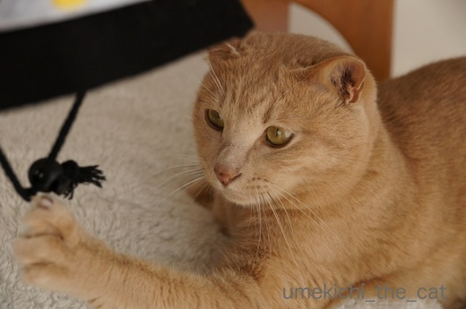
爪が取れなくなって困っている模様w

なまいきなやっちゃー![[むかっ（怒り）]](https://blog.ss-blog.jp/_images_e/152.gif)

・・・・・

おかーさん とってやー

梅吉さんは兜無しでもりりしい若武者ですよ＾＾
梅吉4月22日が推定誕生日。三歳になります。
保護団体の方、獣医さんそれぞれの推定誕生日の間をとって
４・２２（よい・にゃんにゃん）の日に私が独断で決めました。
もしかしたらもう生まれていて他の兄弟を押しのけながら
猫のお母さんを独占してたかも(*>艸<)
お薬生活だけど余病などなく元気に歳を重ねて行って欲しいです。
ってこの内部リンクが5月15日以降無効になるとな！？
梅吉の体重管理、通院記録の便利な覚書なのにー！！！
後日ちまちま直すとしましょうか・・・
 ↑ガブッと一押し↑
↑ガブッと一押し↑
先週末行った植物園。
石楠花
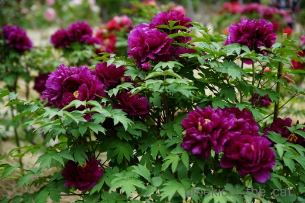
牡丹が見頃でした＾＾
牡丹を見ていると中華料理が食べたくなるのはわたくしだけでしょうか・・・(〃▽〃)
芍薬も後7〜10日くらいで咲き出しそうでしたよー。
そしてこの公園にはライラックが植えられています。
ライラックは私の故郷札幌市の木。
（ちなみに花はスズラン、鳥はカッコウ。托卵しちゃう鳥さんが市の鳥(＠◇＠)！）
こんな暑い大阪でも地植えでイケるのですねー。
札幌のライラック祭りは5月中旬ごろだったかな？
寒くて（リラ冷え）で咲いてないのが例年のお約束でありました。
今年はどうなのだろう・・・
男の子が健康に育ってくれるようにお願いする日なんですよ。

そうそうその兜は梅吉さんを病気から守ってくれるんですって。
どうです？ちょっと早いけどかぶってみませんか＾＾
ついでに荒武者ぶりを披露しちゃいましょうよー！！

なんて虚ろな目の荒武者・・・・・

そうそう＾＾
その調子でキリッとした兜姿を披露しましょう！
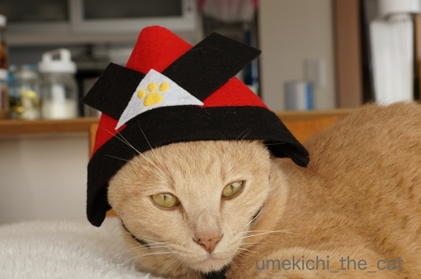
今日はあまり協力的ではないようで(^▽^;)
じゃあ兜を脱ぎましょうか？
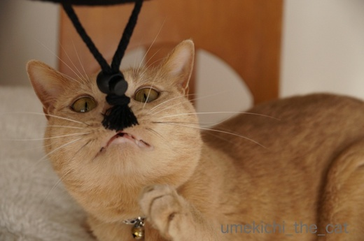
と脱がそうとするとあごヒモに付いていた留め具に反応。
そうそう！その調子で荒武者ぶりを・・・・・
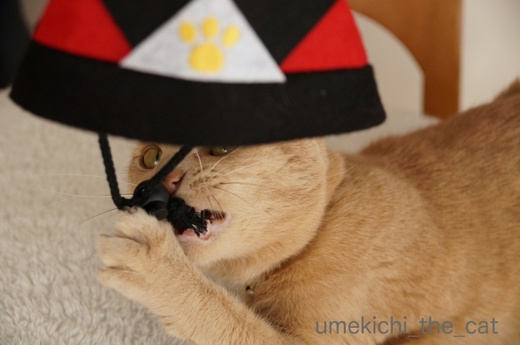
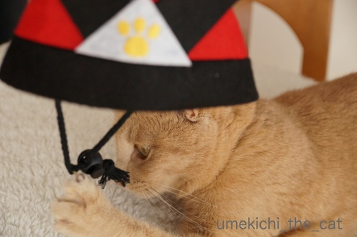
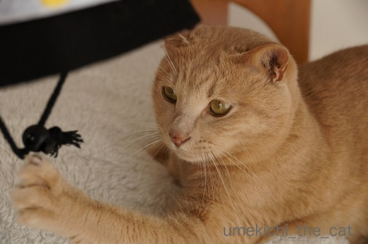
爪が取れなくなって困っている模様w


梅吉さんは兜無しでもりりしい若武者ですよ＾＾
梅吉4月22日が推定誕生日。三歳になります。
保護団体の方、獣医さんそれぞれの推定誕生日の間をとって
４・２２（よい・にゃんにゃん）の日に私が独断で決めました。
もしかしたらもう生まれていて他の兄弟を押しのけながら
猫のお母さんを独占してたかも(*>艸<)
お薬生活だけど余病などなく元気に歳を重ねて行って欲しいです。
ってこの内部リンクが5月15日以降無効になるとな！？
梅吉の体重管理、通院記録の便利な覚書なのにー！！！
後日ちまちま直すとしましょうか・・・
先週末行った植物園。
石楠花
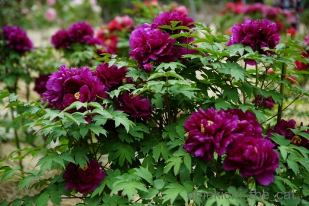
牡丹が見頃でした＾＾
牡丹を見ていると中華料理が食べたくなるのはわたくしだけでしょうか・・・(〃▽〃)
芍薬も後7〜10日くらいで咲き出しそうでしたよー。
そしてこの公園にはライラックが植えられています。
ライラックは私の故郷札幌市の木。
（ちなみに花はスズラン、鳥はカッコウ。托卵しちゃう鳥さんが市の鳥(＠◇＠)！）
こんな暑い大阪でも地植えでイケるのですねー。
札幌のライラック祭りは5月中旬ごろだったかな？
寒くて（リラ冷え）で咲いてないのが例年のお約束でありました。
今年はどうなのだろう・・・
2018-04-20 08:12
nice!(53)
コメント(30)

カフェオレ色の梅吉

梅吉 2023年8月10日 永眠


梅吉と出会った譲渡会

犬猫の理由なき殺処分ゼロ
妄想広告
UMEKICHI 光

爆発的に早い！
時々攻撃的！
Thanks to Mr.Boss365
爆発的に早い！
時々攻撃的！
Thanks to Mr.Boss365

浪速梅吉劇場のドタバタ、笑っちゃいました(^_^;)
梅吉様もお誕生日（のお祝い）が愉しみかしら(^^)
秋バラも良かったけど植物園のお花、素敵(〃'∇'〃)
by middrinn (2018-04-20 09:35)
梅吉君、なかなか凛々しい。
元気にスクスクと育ってくれますよ。
by nao (2018-04-20 11:44)
梅吉くんは4月の22日で3歳になるのね。
くるみたちよりもほんのちょっとお兄ちゃんだ！
お祝いしてもらうのかな？可愛い記念の写真も撮ってもらおうね(^-^)
家のくるみとタラも9月と10月だけど22日がお誕生日ｗ
うち22日がお誕生日の子が3匹だよ～。
兜をかぶった荒武者梅吉くん！元気にスクスクと育ってほしいね。
健康でさえあってくれれば、多少の(いや、かなりのｗ)いたずらには目をつぶれます(^-^)
by emi (2018-04-20 12:24)
肉球かぶと良いのに、脱いでからのお顔の方が凛々しいのね。紐が顔の真ん中に来てるお写真がいいっ! 爪が引っかかって途方にくれるのも可愛いですぅ。
by zombiekong (2018-04-20 12:27)
梅吉さん♪ もうすぐお誕生日なのですね(#^.^#)
生まれてきてくれてありがとぉ～♪
いろいろなお顔を見せてくれて
楽しい毎日ですね！
by きぃ (2018-04-20 12:36)
梅吉さん、間もなく3歳おめでとうございます＼(^o^)／
兜をかぶるとお顔が逆三角形、脱いでヒモすんすんするとまあるいお顔になるのですね♪
爪が引っかかっても落ち着いているところが流石^^
我が家のビビリの慌て者はパニックになって振り回すので大変でございます・・・。
これからも元気に、パパさんママさんにいっぱい甘えてあげてください！
大阪でライラック見たことないです～(^▽^;)
by ゆきち (2018-04-20 13:02)
肉球印の武者兜、かっこいいですね！
もしかして手づくりですか？
ツメが引っかかって「あ…」みたいな顔がいいです。
自分で引っ掛けたのに、「誰がこんな、この〜〜！」みたいになりますよね。
by BillK-ko (2018-04-20 13:08)
虚ろな目の荒武者 ←大笑い(^O^)
「はあ、またこれにつきあうんかいな」ってカオに私には見えたんだけど～(笑)
by palpal (2018-04-20 15:08)
石楠花が綺麗。
フワフワした感じがいいですよね。
by 響 (2018-04-20 16:22)
肉球かぶとが決まってますね!
・・・とその後の方がさすが梅吉さんですね。
元気が一番です(^_^)
by kou (2018-04-20 17:17)
middrinnさん＞
梅吉にはお誕生日だって内緒にしていますw
本にゃんも覚えてないと思うしー(*>艸<)
推定誕生日よりもうちの子記念日にお祝いをって思っていますよ＾＾
おとーさんとおかーさんが梅吉を眺めながら美味しいものを食べる
もとい、梅吉からのお裾分けの美味しいものを食べる、ですwww
naoさん＞
ありがとうございます！梅吉なかなか凛々しいでしょ(^_－)☆
元気いっぱいいたずらをするので手を焼くこともありますが
元気がないより良い！と思っています＾＾
emiさん＞
22日はお誕生日の人気日ね！＾＾
我が家に来てから元気にスクスクまっすぐに育ってくれたので
これからもその勢いで成長して欲しいなぁ＾＾
いたずらはね、もう諦めてますw
ネタを提供してくれていると笑うことにしたわーwww
実際そうだしね(^_－)☆
zombiekongさん＞
こどもの日までになんとか凛々しい一枚をと思っていますが
実現するかは梅吉次第でーす (^▽^;)
爪は本気で困ってました。
梅吉が困ることってあんまりないのでニヤニヤしながら
シャッター切ってましたよ(*>艸<)
きぃさん＞
生まれて来てくれて、我が家に来てくれて
本当にありがとう！です＾＾
梅吉が我が家を選んでくれた、とも思っていますよー(≧▽≦)
毎日いろんな顔を見せてくれるので写真の枚数が増えて増えて・・・
きぃさんには敵わないかも、ですけど(*>艸<)
ゆきちさん＞
お祝いのお言葉ありがとうございます！
兜をかぶると期せずしてシュッとしてリフトアップ！？
私も試そうかと思いましたよー(*>艸<)
ライラックは長居植物園です。
この時期は毎年キレイに花を咲かせてくれていますよー。
香りも良いです！
ただ大阪の気温はライラックにとっては暖かすぎるのか
散るのも早いです(-_-メ)
シロバナのライラックは咲ききれずに開花前からすでに茶ばんでましたw
今年は暖かすぎるから・・・
機会がありましたら来年あたりにでも是非＾＾
BillK-koさん＞
手作りです！と言いたいところですが
私そんなに器用じゃありませーんw
これはブログ友の方に「梅吉君に似合いそう！」と
教えていただいて3coinsで買いました＾＾
引っかかった爪はご指摘通り
「おかーさんのせいや！」って顔されたので慌てて外しましたw
私のせいじゃないのに！
でもニヤニヤしながら写真撮りまくっていたのも事実です(*>艸<)
palpalさん＞
その通りよ！！
軽くため息つかれたから(*>艸<)
諦めて程々付き合ってくれるのがエライぞー、梅吉！！
響さん＞
石楠花、まだ蕾のものも沢山あったので
まじまじと見て来ちゃいました。
大きな蕾が１つ出て来てそこから沢山の花が咲く。
面白かったです＾＾
kouさん＞
そのまま寝ちゃうかな？と思ったのですが
梅吉らしい展開になってくれました(*>艸<)
梅吉、わかっているわー！！
少々元気すぎますがこのままで良い、と思ってます＾＾
by ちぃ (2018-04-20 18:10)
梅吉さん兜をかぶって節句の前倒しですね！
中央の肉球が良い感じですね(^^)
by ma2ma2 (2018-04-20 18:30)
もうすぐ3歳、おめでとうございます！
梅吉さん、兜なしでも充分凛々しいです。
ワタクシ的には、寄り目になってるお写真も好きです。^^)
by yes_hama (2018-04-20 21:54)
あははは(笑)
爪がひっかかっちゃったのねーｗｗ
取って貰えて良かったね。
兜をかぶった梅吉君、りりしいよ^^
あおもかぶらなくちゃ♪
4月22日で３歳、まだまだ若い！！
元気でいてね^^
by リュカ (2018-04-20 22:52)
梅吉さん、3歳ですか。
うちのユキと同じくらいですね。
梅吉さんは立派に見えるので年上だとばかり思っていました。
ユキはまだまだ子供です(^^)
by riverwalk (2018-04-20 23:46)
よい・にゃんにゃんのお誕生日、素敵ですね～。
もうすぐお誕生日♪
にくきゅう兜、いいですねーいきなりモチベーションだだ下がり‥＾m＾；
がしっとバトルに入るとこも可愛い～けど、あ、爪が‥
とってや～も可愛い＾＾
植物園、石楠花に牡丹にライラック！鮮やかで美しい～＾＾
by sana (2018-04-21 00:16)
虚ろな目の荒武者、朝から大笑いさせてただきました＾＾
3歳でお薬生活とは、大変ですが頑張ってください。
by ぽちの輔 (2018-04-21 07:21)
おっ、3歳のお誕生日ですか(^.^) おめでとうございます♡若いわ〜〜
虚ろな目の荒武者(^m^) 笑えるわ〜
爪が引っかかると、「おかあちゃん、とって〜」になるのね♪
by のらん (2018-04-21 10:56)
梅吉さん、明日が３歳のお誕生日なんですねぇ( ^ω^ )
おめでとうございます*\(^o^)/*
兜も被ってイケメン（ちょっと目がうつろなw）さんな梅吉さん、
これからも元気ではっちゃけちゃってくださいね=(^.^)=
by ニッキー (2018-04-21 12:47)
おぉ！かぶと！
虚ろな目の荒武者もステキですよ♡
もう少しゆるめの方が、兜の横の角が立つかしら？
（その代わり外れやすくなるんですよね・・・）
梅吉くん、おたんじょうびおめでとうございます。
まだ３歳なのですねー若い！
これからも、健やかにがぶがぶしていってください。
花もどれもきれい。牡丹も芍薬も華やかで好きな花です。
by Ja-Kou66 (2018-04-21 23:09)
推定お誕生日おめでとうございます！
兜で目が虚になるってどうよー(^_^;)
これからも元気に頑張ってね！！
by よーちゃん (2018-04-22 13:38)
兜の大きさが梅吉さんにピッタンコで
似合いますね。いつものキリッとした
表情も素敵ですが、うつろな目は
ニヒルな落ち武者風かな？
by うりくま (2018-04-22 17:12)
愛がいちばんのお薬、そういう意味では、ちぃさんのお子でいることがベスト！でしょ。よかったね！いつまでも健やかに。
by Ginger (2018-04-22 19:52)
梅吉さんお誕生日（推定）おめでとう♪
兜つけてるとちょっとライオンばりのりりしいお顔ですね。
ライラックがすてきです~。
by ふにゃいの (2018-04-22 20:38)
おめでとうございます^ ^
立派にオトナの猫ですね！
by ryang (2018-04-22 21:45)
遅ればせながら、梅吉さん お誕生日おめでとうございます♪
兜がよく似合ってます♪
イケニャンだね＾＾
でも、紐のほうが楽しいよね♪
あかりと同級生の梅吉くん☆いつまでも
元気でいようね～(*^^*)
by マーヤ (2018-04-23 00:18)
しばらくぶりでございます^^;
梅吉さん3歳のお誕生日おめでとうございます！！
お薬生活でもこうして元気にゆるりと過ごして頂けたら何より嬉しい♪
兜のご利益ありますように(^^)b
梅吉はん！3歳さんのお誕生日おめでとうさんやで！
ウチも同じ推定4月生まれ、13日で10歳さんになったわ！
お互いゆっくり歳取って行こな〜(=^x^=)
by くつしたにゃん (2018-04-23 09:10)
梅吉さん、3歳のお誕生日おめでとうございます。
キリッとした兜姿もステキです。
ちぃさん一家でユックリと楽しんで欲しいです。
初めて札幌に行った時は『ライラック祭り』の期間でしたが、
ライラックの花は咲いた後でした。
生のライラックが見たかったといいつまでも覚えています（笑）
帰宅して、家事の段取りなど分からなくて右往左往しています。
by kiki (2018-04-23 09:18)
ma2ma2さん＞
ちょっと気が早いのですが梅吉の誕生日にちょうど良いかな？と
アップしちゃいましたー＾＾
yes_hamaさん＞
被り物をかぶせると嫌々ながらという雰囲気と
ちょっと情けない表情になるのですよね (^▽^;)
寄り目写真は私も気に入っています。
どこかに投稿しちゃおうかしらー(*>艸<)
リュカさん＞
爪を引っ込めたら取れると思うんだけど
なんだか下手くそで困ってましたw
挙句「おかーさんのせいやー」みたいな顔してましたよwww
イケにゃんあおくんの兜姿も楽しみだわー！
カメラ目線で決めてくれるよね！
riverwalkさん＞
エラソーなのでおっさんっぽく見えるかもしれませんが
まだまだお子ちゃまですよー＾＾
sanaさん＞
お誕生日はあくまでも推定なので
特にお祝いもせずに過ごしました。
7月のうちの子記念日に何かお祝いを、と思っています＾＾
近所の植物園は今まさに百花繚乱といった感じです。
毎週の様に通ってまーすw
ぽちの輔さん＞
お薬は「若いうちから健康管理ができて良い」
と思う様にしています。
梅吉の体調を良く知っているかかりつけ医ができたのも
心強いかも、です＾＾
のらんさん＞
うふふ♡まだぴっちぴちの３歳ですよー＾＾
おちりのお肉なんかもぷりぷりしてたまりません！
爪が引っかかるとジト目で見られませんか？
私のせいじゃないのにー！！
ニッキーさん＞
お祝いのお言葉、ありがとうございます＾＾
多少マイルドになったとの意見もありますが
まだまだはっちゃけていきますよー！！
Ja-Kou66さん＞
兜、教えていただいてありがとうございました＾＾
軽くて良いな、と思ったら頭の上で浮きがちになって
あご紐を締めると兜の形がいまひとつ・・・と
なかなか手強い兜でございましたー。
お誕生日の厄除けにはぴったりのアイテムでしたけど(^_－)☆
牡丹、芍薬本当にゴージャスな花ですよね。
わさっと花瓶に生ける・・・なんて憧れましたが
梅吉がいると無理な話になってしまいましたw
よーちゃん＞
「またするんかい・・・」と軽くため息つかれましたよ(*>艸<)
梅吉は元気には自信がありますよー！！
頑張っちゃいますw
by ちぃ (2018-04-23 18:25)
うりくまさん＞
落ち武者ー！！我が家で爆笑でした＾＾
ザンバラ髪を兜につけたくなりましたよー。
来年はそれで行こうかしら・・・(*>艸<)
Gingerさん＞
愛情だけは毎日迷惑がられるほど浴びせております！
にゃんこに思春期がなくて本当に良かった。
もしあったらものすごく嫌われていそうです・・・(^▽^;)
ふにゃいのさん＞
梅吉、色がちょっとライオンぽいんですよねー＾＾
だらしなーく脱力して寝ているところなんか
メスライオンそっくりです(*>艸<)
ライラックは我が家に盆栽もあるんですよ＾＾
ryangさん＞
はい＾＾大変甘えん坊なオトナのおとこになりました(*>艸<)
マーヤさん＞
お祝いのお言葉ありがとうございますm(_ _)m
5月5日までには
もう少しちゃんと凛々しい写真を撮りたいな、と思っていますよー＾＾
あかりちゃんとナノくんと同級生♪
みんな40歳くらいまでがんばろー！！
くつしたにゃんさん＞
おひさしぶりです♪
甘えぼんずな梅吉も三歳になりましたよー＾＾
いつまでも少年の心を失わずにいてほしいものです。
お薬は体調管理の一環として頑張りまーす(^_－)☆
くつした姐様も4月生まれ！
10歳の熟女とはとっても親近感が湧いちゃいます（私が）(*>艸<)
ほんと、みんにゃいつまでも元気に長生きしてほしいものです！！
kikiさん＞
梅吉には我が家でゆっくりのんびり楽しく過ごして欲しいです＾＾
札幌でライラックを見られなかったとは残念ですね・・・
私が大阪で見たのは長居植物園ですよー。
今年はもう終わったと思われますが来年あたりいかがですか？
何本か植えられていて（シロバナもあり）良い香りも漂いますよ＾＾
お疲れも取れていつものペースの戻るには２〜３日かかるでしょうか。
ちょうど蒸し暑い感じにもなって来ているので
ご無理はなさいませんように(^_－)☆
by ちぃ (2018-04-23 20:40)